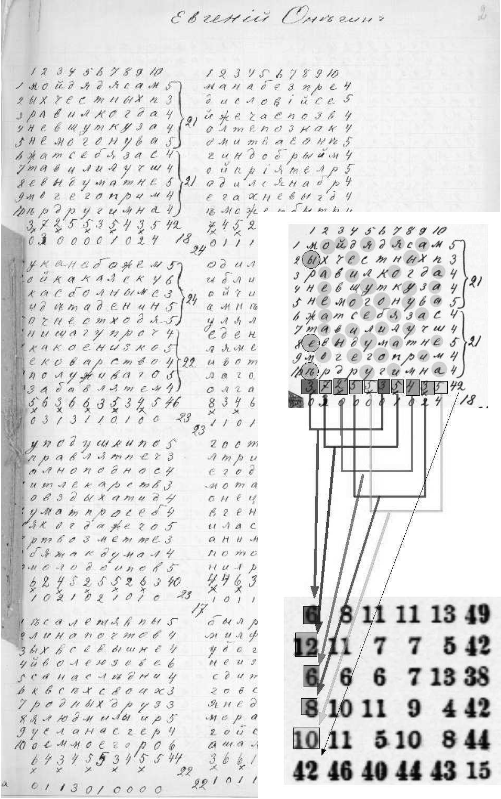

Markov chains might be thought of as a satellite planet in a cluster of curious phenomena revolving around chance and probabilites. In this way, one could map constellations with other orbiting bodies such as language, music, Google's PageRank algorithm, Stable Diffusion, and even psychoanalysis.
A Markov chain enocdes or describes a sequence of states and their transitions from one to the next. A 'state' can be a rather abstract term, but can be thought of as whatever the current value of something that changes currently is. Say, like the weather, our mood, or what activity we a currently up to. One of the first and enduring applications of this idea was to apply it to text; a sequence of letters or words. A Markov chain or model of a sequence is simply the record of the of the changes in that sequence, stored as probabilities.
You might interact (or be tempted to interact) with Markov Chains every day. Every time the keyboard on your phone is present, odds are you have an interface to a Markov model of possibly all the words you've ever typed into your phone.
gif of text markov on the phone...
It is often the case that the words spread across the top of the keyboard are the top three most likely words to follow the most recent word typed.
If you flip a coin, ignoring extreme circumstances, it will land on one of two sides. One might call this a "50/50" chance. But what that name obscures is that it's technically a '0.5' chance. This number is the result of taking 1 (as in 1 outcome) divided by the total number of possible outcomes (2 sides of the coin). If you flip a coin 10 times, you might have 6 for one and 4 for the other. However, if the coin's origin isn't magical, over an large amount of tosses, the total for each side converges or becomes substantially the same. Notice that as the number of attempts becomes sufficently large the total of one outcome divided by the total attempts is approximately our initial probability of 0.5. You might say that our outcomes are constrained to our probabilities, they can't get away from them.
You could recreate this coin mechanism by generating a random number between 0 and 1. If we classify the numbers below 0.5 as one side of the coin and the numbers above 0.5 as the other side, each outcome has an equal probability.
var coin
if(Math.random() < 0.5)
coin = 'heads'
else
coin = 'tails'
Changing the test condition from "less than 0.5" to "less than 0.6" will make 'heads' the more likely outcome over time.
Just like the slider can be moved around to effect the amount of times a random number lands in that region, more regions can be added taking up various amounts of space on the number line. This, in a sense, is a probability distribution. The more space an option takes up, the more likely it is that a random number will fall within it's boundaries.
In the sequence of letters a -> a -> b, a has a "50/50" chance of being followed by another a or being follwed by b. In this sequence, the two transitions, represented by arrows, are two outcomes of the state a. Two different outcomes, each of them happening an equal amount of times. Notice that row b doesn't have any information yet as nothing follows it.
Continue the sequence by adding another a. According to our data b is now always followed by a with the probability of 1.0 or a "100 precent chance." Adding yet another a will change the weights of the possible next states of a to be more biased toward a.
By itself, this table of probabilities doesn't perform any action, it's merely an analysis of the training data. However, if the table is used as a map to guide a random input, it has a certain influence over the outcomes.
You can step through the generative output of your sequence above step by step.
The current state has a set of probabilities related to what comes next in the text box. Those probabilites are mapped, according to their size across the number line. A random number is generated which will fall within some region, with larger regions being more likely to contain the random number. The region that contains the generated number becomes the next state.
If the table is viewed like a game board, the model influences what space or row is moved to next. If that space was not a row in a table but a key on a piano, it would influence what notes are played in a melody.
Here a short sequence or melody can be programmed similar to a piano roll in ableton. The melody can be played back as well as the output generated from a markov model of the melody. How might different initial sequences affect the 'musicality' of the generated output? Do some models sound more interesting than others?
How do the initial melodies affect this "connected graph" visualisation of the model?
Some issues become more visible here:
At this point the avenues to solve some of these problems become quite diverse and numerous. Taking at least one step and increasing the scope to include polyphonic music (more than one note at a time) what are some attributes or features of a piece of music?
Luckily, a score or midi file for a musical piece generally includes much this information and each parameter or attribute would just need to be modeled separately as it's own sequence.
When moving through a musical piece the time between notes can be described as a sequence: wait a quarter note, then wait an eighth note, etc... The number of notes played simultaneously can be kept track of and turned into it's own sequence: 3 notes at once, 2 notes at once, then a single note... All this data can be extracted from score or a midi file.
Below you can drag and drop midi files which might contain whole compositions or single instruments and create models of any combination of midi tracks and later even combinations of different musical peices.